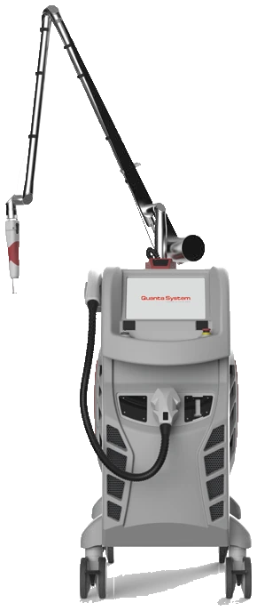
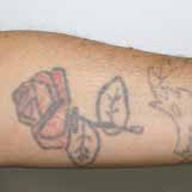
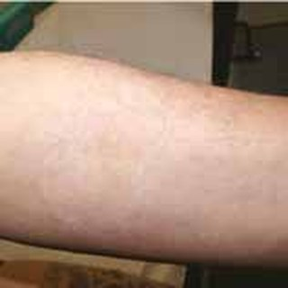
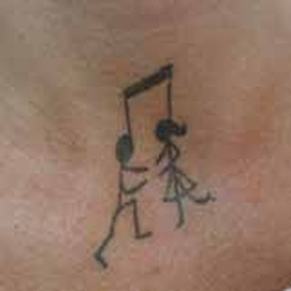
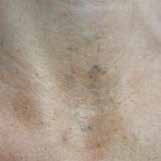
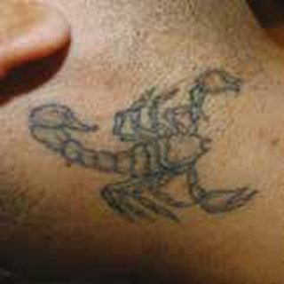

JR東大宮駅 徒歩1分｜いしだ皮フ科・美容皮膚科（さいたま市見沼区）
いしだ皮フ科・美容皮膚科では、3つの波長を1台で使い分けられるピコレーザー「ディスカバリーピコプラス」で、タトゥー（刺青・入れ墨）とアートメイクの除去を行っています。保険診療でアザやシミのレーザー治療を日常的に行っている医師が、インクの色・濃さ・深さに合わせて照射方法を設定します。

このページのまとめ
就職・転職や結婚を機に、タトゥー・刺青を消したい
温泉・ジム・プールで人目を気にせず過ごしたい
カラーのタトゥーでも料金が上がらないか心配
眉などのアートメイクが濃すぎる・形が合わなくなった
カバーアップの前に、今の図柄を薄くしておきたい
他院で治療を受けたが、色が残っている
当院では保険診療で、太田母斑や異所性蒙古斑などのアザ、シミなどの色素性疾患をレーザーで治療しています。皮膚の中の色素がどの深さに、どれくらいの濃さで、どんな大きさの粒で存在するかを見極めて照射する点は、タトゥー・刺青の除去も同じです。
インクの色
波長を決める
色ごとに吸収されやすい光が異なるため、532・694・1064nmから選びます。複数の色が入ったタトゥーは、波長を切り替えて照射します。
インクの粒の大きさ
モードを決める
細かい粒子にはピコ秒、大きな塊にはナノ秒と、照射の時間幅を使い分けます。
濃さ・深さ・肌の反応
出力と照射径を決める
インクの濃さや深さ、部位、肌の色に合わせて設定し、前回の照射後の反応を見て毎回調整します。
照射後の色素沈着・色素脱失・水ぶくれなどの肌の変化も、皮膚科として経過を診察し、必要に応じて治療します。
ディスカバリーピコプラスは、イタリアのQuanta System社が製造するタトゥー除去用のレーザー機器です。1兆分の1秒単位（ピコ秒）の照射と、10億分の1秒単位（ナノ秒）の照射の2つのモードを備えています。
ピコ秒の照射は、熱よりも衝撃波でインクを細かく砕くため、周りの皮膚への熱ダメージを抑えられます。ナノ秒の照射は、大きなインクの塊に作用します。砕かれたインクは、時間をかけて体内の免疫細胞に取り込まれ、排出されていきます。
インクは色ごとに吸収しやすい光の波長が異なり、波長が長いほど皮膚の深い層まで届きます。3つの波長を1台で使えるため、黒一色のタトゥーにもカラーのタトゥーにも、インクの深さにも合わせて照射できます。
532nm
緑色の光｜Nd:YAG
赤・オレンジ・黄・茶・紫のインク
694nm
赤色の光｜ルビー
青・緑・黒・茶・紫のインク
1064nm
近赤外線｜Nd:YAG
黒・紺・こげ茶のインク、深い層のインク
※波長ごとの対象色はメーカー資料に基づきます。白・肌色などの淡い色や、一部の金属を含むインクはレーザーに反応しにくく、薄く残ることがあります。
※医療機器承認番号：30200BZI00018000（使用目的：刺青及び色素性病変の蒸散及び除去）
眉などのアートメイクも、タトゥーと同じくピコレーザーで色素を砕いて薄くしていきます。アートメイクの色素には、照射によって黒っぽく変化しやすい成分（酸化鉄や白色の顔料など）が含まれていることがあるため、診察で色と部位を確認し、必要に応じて小さな範囲で反応を確認してから照射範囲を広げます。
アイラインなど目のすぐ近くは、照射できない場合があります。料金はタトゥー除去と同じく面積で決まります。


治療4回／写真提供：Nicola Zerbinati MD


治療7回／写真提供：Valerio Pedrelli MD

治療5回／写真提供：Valerio Pedrelli MD
照射の間隔
6〜8週間以上
砕いたインクが排出され、皮膚が回復するまでの期間をあけて、次の照射を行います。
回数の目安
5〜10回以上
プロが彫った黒一色のタトゥーの一般的な目安です。カラーや重ね彫り、深く入ったインクでは、さらに回数が必要になることがあります。
1回の照射で消えることはほとんどなく、照射を重ねるごとに少しずつ薄くなっていきます。インクの状態によっては、回数を重ねても跡や色が残る場合があります。
税込・1回あたりの料金です。黒一色でもカラーでも同じ料金で、照射する面積だけで決まります。アートメイク除去も同じ料金です。
〜5cm²
500円玉ほど
29,700円
〜10cm²
38,500円
〜30cm²
49,500円
〜50cm²
名刺ほど
59,400円
51cm²以上10cm²ごとに＋5,500円
50cm²を超えた分は10cm²単位で切り上げて計算します（例：100cm²の場合、59,400円＋5,500円×5＝86,900円）。
ご予約
LINEからご予約ください。美容皮膚科は水曜・祝日・特別診療日の完全予約制です。
診察・カウンセリング
インクの色・深さ・範囲と肌の状態を確認し、照射できるかどうか、回数の目安、料金、リスクをご説明します。
照射前の準備
照射部位を撮影して記録します。ご希望の方には麻酔クリームを塗布します。
照射
インクの色に合わせて波長を選び、照射します。照射時間は範囲により数分〜数十分です。
アフターケア
冷却し、軟膏を塗ってガーゼなどで保護します。ご自宅でのケア方法をお伝えします。
次回の照射
6〜8週間以上あけて、経過を診察してから次の照射を行います。
照射直後〜数日
白っぽく浮き上がった後、赤み・腫れ・熱感、点状の出血がみられます。
軟膏を塗り、ガーゼや保護テープで覆います。当日はシャワーのみで、患部はこすらないでください。
数日〜2週間
水ぶくれやかさぶたができることがあります。
水ぶくれは潰さず、かさぶたは自然にはがれるまで待ちます。
2週間以降
表面が落ち着き、インクがゆっくり薄くなっていきます。
色素沈着を防ぐため、照射部位の紫外線対策を続けてください。
※照射当日は長時間の入浴、飲酒、激しい運動など血行がよくなる行動はお控えください。
次に当てはまる方は、治療をお受けいただけないか、診察で慎重に判断します。
埼玉・大宮でタトゥー除去をご検討の方へ
インクの色や範囲を拝見し、照射できるか、回数と料金の目安をご説明します。
タトゥー除去は保険適用外の自由診療です。表示価格はすべて税込です。治療効果には個人差があります。